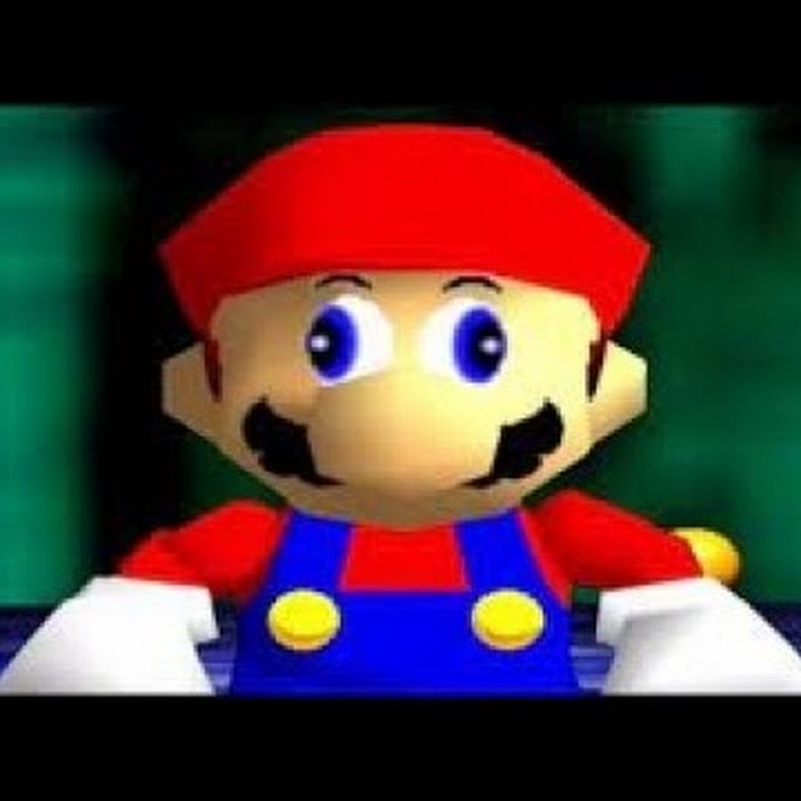

gameplay de mario 64
gameplay de The Legend of Zelda: Ocarina of Time
Anthonny numero 41 1c

jogos famosos de nitendo 64
um pouco de informação sobre o nintendo 64
Nos EUA e no Brasil foi lançado simultaneamente em 29 de setembro de 1996
Super Mario 64 é um jogo eletrônico de plataforma desenvolvido e publicado pela Nintendo. Lançado em 1996 para o Nintendo 64, é o primeiro título da série Super Mario a oferecer gráficos tridimensionais.